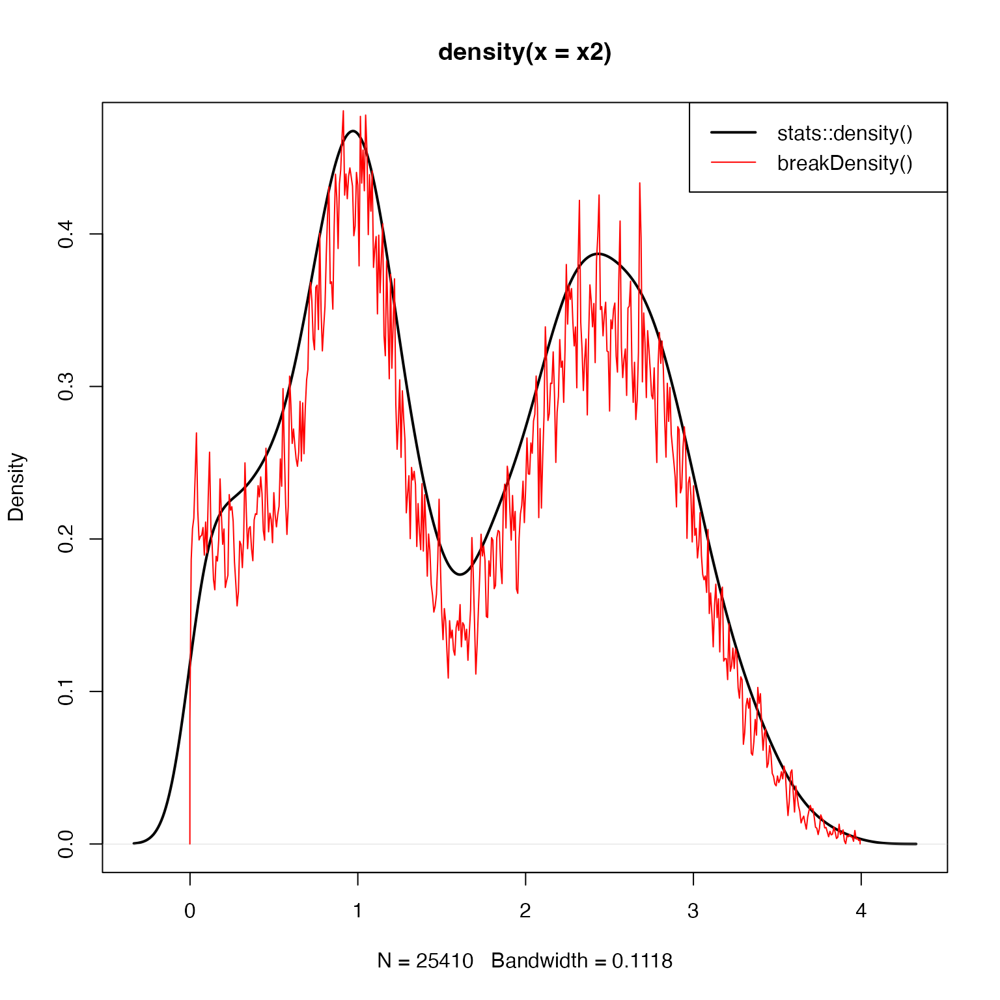

Calculate more detailed density of numeric values
Usage
breakDensity(
x,
breaks = length(x)/3,
bw = NULL,
width = NULL,
densityBreaksFactor = 3,
weightFactor = 1,
addZeroEnds = TRUE,
baseline = 0,
floorBaseline = FALSE,
verbose = FALSE,
...
)Arguments
- x
numeric vector
- breaks
numeric breaks as described for
stats::density()except that single integer value is multiplied bydensityBreaksFactor.- bw
character name of a bandwidth function, or NULL.
- width
NULL or numeric value indicating the width of breaks to apply.
- densityBreaksFactor
numeric factor to adjust the width of density breaks, where higher values result in less detail.
- weightFactor
optional vector of weights
length(x)to apply to the density calculation.- addZeroEnds
logical indicating whether the start and end value should always be zero, which can be helpful for creating a polygon.
- baseline
optional numeric value indicating the expected baseline, which is typically zero, but can be set to a higher value to indicate a "noise floor".
- floorBaseline
logical indicating whether to apply a noise floor to the output data.
- verbose
logical indicating whether to print verbose output.
- ...
additional parameters are sent to
stats::density().
Value
list output equivalent to stats::density():
x: Thencoordinates of the points where the density is estimated.y: The estimated density values, non-negative, but can be zero.bw: The bandidth used.n: The sample size after elimination of missing values.call: the call which produced the result.data.name: the deparsed name of thexargument.has.na:logicalfor compatibility, and alwaysFALSE.
Details
This function is a drop-in replacement for stats::density(),
simply to provide a quick alternative that defaults to a higher
level of detail. Detail can be adjusted using densityBreaksFactor,
where higher values will use a wider step size, thus lowering
the detail in the output.
Note that the density height is scaled by the total number of points,
and can be adjusted with weightFactor. See Examples for how to
scale the y-axis range similar to stats::density().
See also
Other jam practical functions:
call_fn_ellipsis(),
checkLightMode(),
check_pkg_installed(),
colNum2excelName(),
color_dither(),
exp2signed(),
getAxisLabel(),
handleArgsText(),
isFALSEV(),
isTRUEV(),
jargs(),
kable_coloring(),
lldf(),
log2signed(),
match_unique(),
middle(),
minorLogTicks(),
newestFile(),
printDebug(),
reload_rmarkdown_cache(),
renameColumn(),
rmInfinite(),
rmNA(),
rmNAs(),
rmNULL(),
setPrompt()
Examples
x <- c(stats::rnorm(15000),
stats::rnorm(5500)*0.25 + 1,
stats::rnorm(12500)*0.5 + 2.5)
plot(stats::density(x))
plot(breakDensity(x))
plot(breakDensity(x, densityBreaksFactor=200))
# trim values to show abrupt transitions
x2 <- x[x > 0 & x < 4]
plot(stats::density(x2), lwd=2)
lines(breakDensity(x2, weightFactor=1/length(x2)/10), col="red")
graphics::legend("topright", c("stats::density()", "breakDensity()"),
col=c("black", "red"), lwd=c(2, 1))
